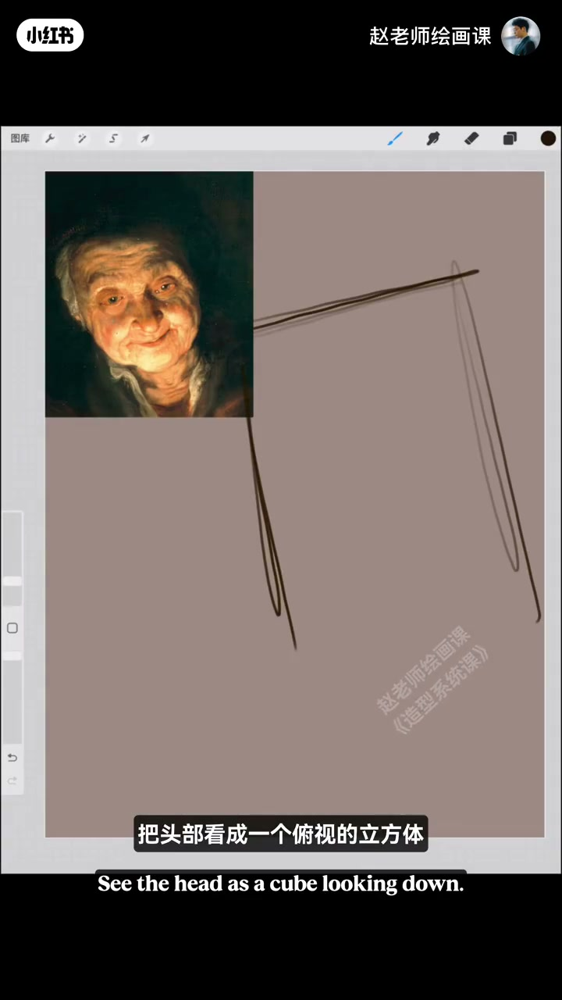
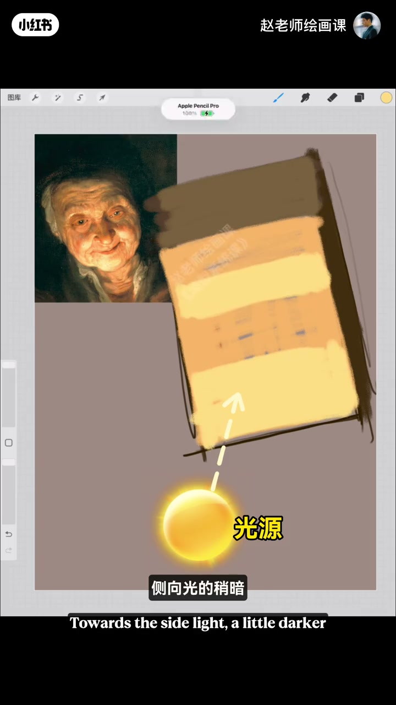
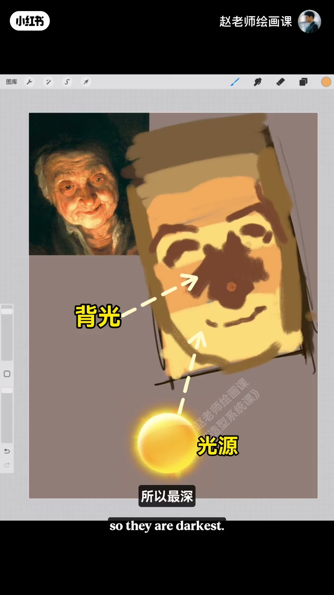
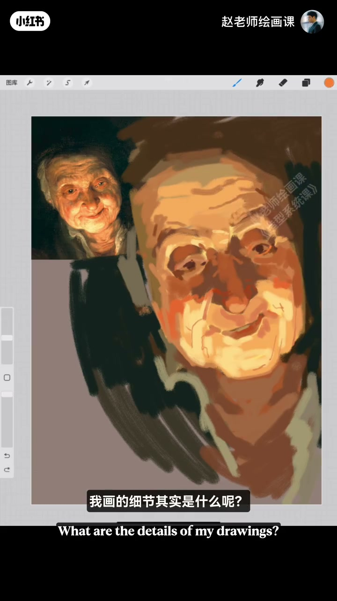

内容要点
我们可能太早关注细节。看鲁本斯：闭眼去掉细节剩什么？是体块——应先画出体块再带出细节。示范把头部看成俯视立方体，光从下方来，分出正面、侧光稍暗、朝光提亮、背光最深；加深色背景帮控明度。深入时细节其实是大体块上的小体块关系，绝不是孤立描眼皮皱纹。检查块面朝向是否符合光影逻辑，再点闭塞细节收尾。
知识结构
去细节剩体块；先体块后细节。
俯视立方体＋下光源；分面；背光最深；背景助明度。
细节＝小体块；校正朝向；课宣。
复杂肖像用体块意识降维：先立方体与明暗朝向，细节只是小体块，永远别脱离光影逻辑去描线。
00:00-00:16太早抠细节？鲁本斯只剩体块
我们可能太早关注细节刻画。看看鲁本斯：闭起眼睛去掉细节以后剩下的是什么？是体块。我们应该先画出体块再带出细节。
开场立论后进入「原理掌握开始示范」。

00:16-01:23示范：立方体头＋上下光源分面
把头部看成俯视的立方体，光源从下方打来，先给基本明暗；再区分正面块面朝向，侧光稍暗，朝着光源一定要亮，并把脸部侧面切分出来。深色块来自完全背光所以最深；与其他体块衔接处要连上。
可加深色背景更好把握明度；完全朝着光源的面大胆提亮，小体块转折轻松带出。00:20／00:35／00:50 是分面证据。


01:23-02:18细节是小体块，不是描线
眼周体块理清后瞳孔可大胆点上，此时才深入细节。注意：画的细节其实是大体块上面的小体块关系，一定不是孤立去描眼皮、眼袋皱纹。牢记小体块关系，不断检查校正块面朝向是否符合光影逻辑；简单强调几笔闭塞细节即可结束。
全程体块意识，可轻松画完非常规角度光线的复杂肖像。片尾造型系统课宣传。01:35 字幕点题「细节其实是什么」。

完整转录（50段）
以下文本由 Whisper medium 模型自动转录，可能存在少量识别误差，已尽可能修正。
我们可能太早关注细节刻画了
你看看卢本斯
我们闭起眼睛
去掉细节以后剩下的是什么
是体块
我们应该先画出体块再带出细节
原理掌握开始示范
把头部看成一个俯视的立方体
光源从下方打过来
我们给到一个基本的明暗关系
然后我们来区分出头部正面的块面朝向
侧光稍微暗一点
这么对光源一定要亮起来
对
是这个意思
同时把脸部的侧面切分出来
这些深色块是从哪来的
很简单
这些块面因为完全背光
所以最深
继续和其他体块连接的地方
要给它衔接起来
这时候我们可以加一个深色的背景
这样可以帮助我们更好的把握好明度
完全重着光源的面
一定要大胆的提亮
往下走
小的体块转折也给轻松的带出来
眼睛周围的体块线铃好以后
瞳孔就可以大胆的点上去
这个时候就是深入细节
注意
我画的细节其实是什么呢
是大体块上面的小体块关系
一定不是那种孤立的去描那个眼皮
眼带皱纹等等
最后我们要牢记这些小体块的关系
不断的检查较正
看看我们的块面朝向
是否符合这个光影逻辑
好了
简单强调几笔闭塞细节
就可以结束了
很舒服吧
我全程用体块意识
很轻松的就能画完这个复杂的
而且是非常规角度光线的肖像
想学会吗
我们2月2日造型系统课上见
拜拜